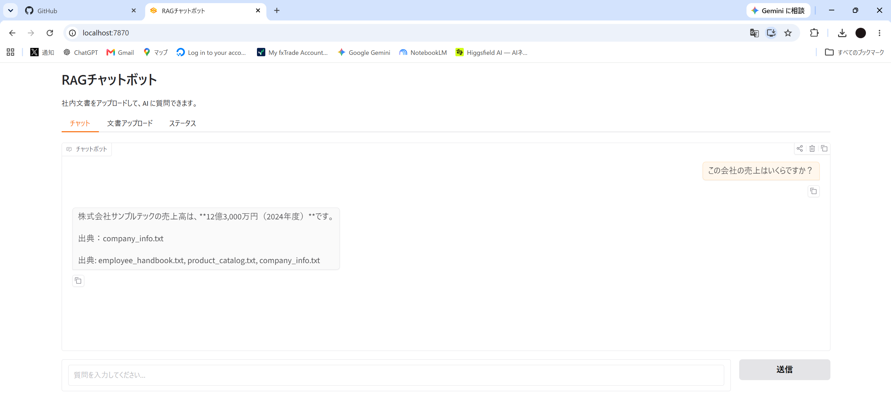
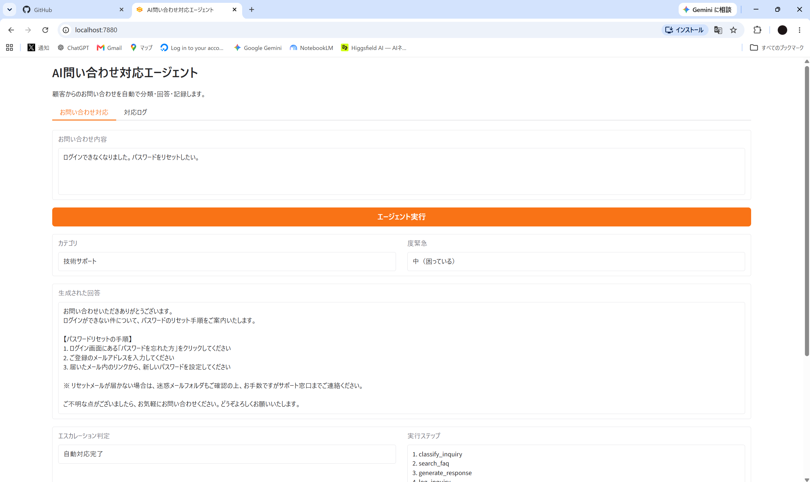
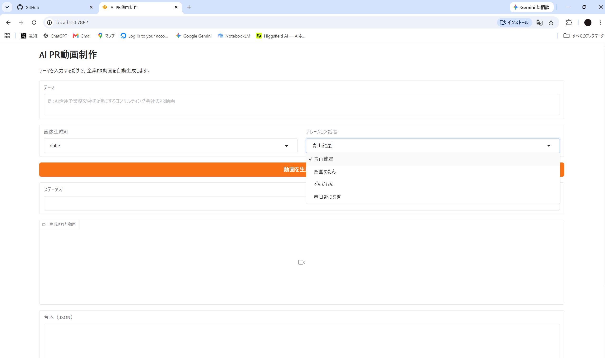

Web制作25年以上の経験と最新AI技術を組み合わせ、業務自動化からシステム開発まで幅広く対応します。
テーマだけください。あとは全部やります。
慶應義塾大学 総合政策学部 卒業
東京大学大学院 学際情報学府 修士課程修了
Web制作・開発: 25年以上
CMS構築（WordPress等）: 20年以上
AI活用開発: 2年
フルリモート対応
業務委託・スポット案件・継続契約いずれも可
日本語: ネイティブ
英語: 読み書き実務レベル

社内文書（PDF・テキスト）をアップロードするだけで、AIが文書内容に基づいて質問に回答するチャットボットシステム。出典表示付きで、ハルシネーション（誤情報）を防止。

顧客からの問い合わせをAIが自律的に処理。分類・FAQ検索・回答生成・エスカレーション判定・ログ記録までを自動で実行するマルチステップAIエージェント。

テーマを入力するだけで、企業PR動画を全自動で生成。台本作成・画像生成・ナレーション・テロップ付き動画合成までAIが一貫して処理。
2000年頃からWeb制作に携わり、企業サイト・ECサイト・プロモーションサイトなど多数の実績があります。